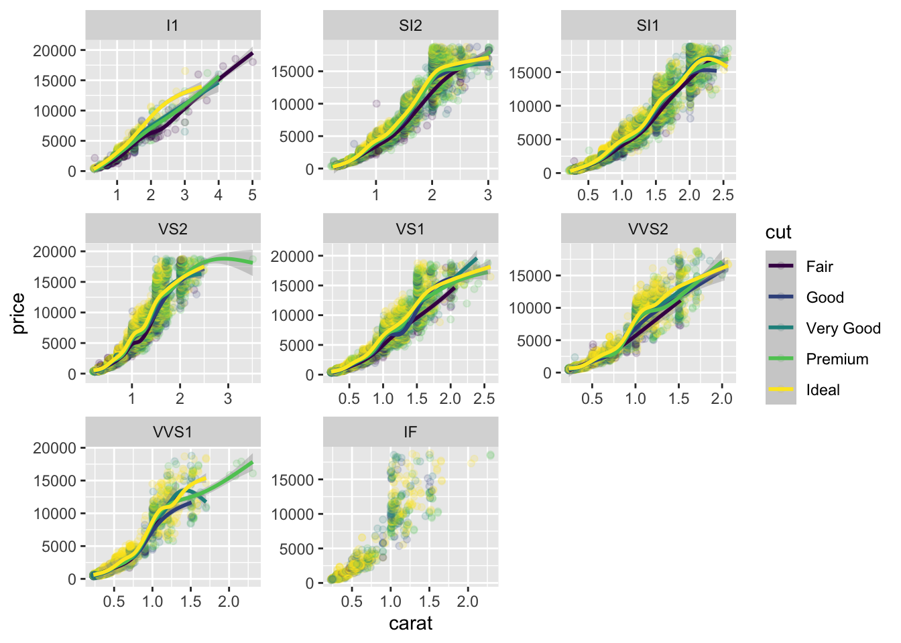
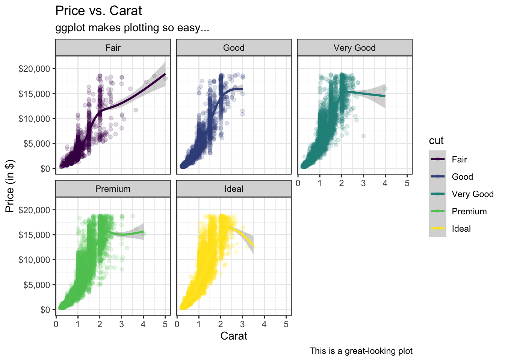

Code
library(tidyverse)The purpose of this article is 3-fold:
to demonstrate the basics of R as concisely as possible so that you can get up and running on your own projects, even if you’ve had no exposure to coding.
to act as a basic guide for the non-technical readers interested in following my Research Articles at a more granular level.
to familiarize myself with the process of writing and explaining topics before I publish my research (and to make sure that my website is working…)
I would quickly like to explain my background and why I think it is important to have a basic knowledge of ‘coding’:
I am a Business & Investment Analyst, and 9 months ago I had absolutely no knowledge of ‘coding’; my technical ability was comparable to that of your average dog. I can now tell you 9 months in that understanding the basics of ‘coding’ goes a very long way.
Firstly, as long as you do a task correctly the first time in code, you can then automate away that task (and its different variations). Whether its performing the same calculations in an Excel file that your boss sends you every morning, or publishing your company’s quarterly financial statements, the same principle applies.
Secondly, we are living in a world where data is everywhere, and the ability to code allows one to dig into the data and draw valuable insights from it. For anyone in an analytical position (whether Financial Analyst, Medical Researcher, or CEO), this is extremely important and allows you to stand on the shoulders of giants.
Thirdly, you can leverage tools that others have built. There is so much free code on the web and someone else may have already built a tool or completed a task that you are trying to do. This is extremely helpful.
Lastly, a word of caution: coding is not everything. You can be the world’s greatest coder, but if you lack the ability to build a logical, easily-explainable narrative from data, then your value is limited to the tools that you can build for others. In other words, true value comes from the ability to not only work with data, but also derive meaning from it and think originally.
Ok, that’s all; let’s get into it!
Before you can use R, you need to install it along with RStudio on your computer. Next, run install.packages("tidyverse"). The tidyverse is an R package that someone created which makes working with data easy.
Next, we need to load this package by running library(tidyverse).
library(tidyverse)You are all set - now we can begin.
Data is simply a spreadsheet of values, and we would like our data to be in a ‘tidy’ format.
Data is considered tidy when each column represents a variable and each row consists of an observation. Consider the following dataset (and feel free to inspect the code and guess what each line means):
diamonds %>%
head()| carat | cut | color | clarity | depth | table | price | x | y | z |
|---|---|---|---|---|---|---|---|---|---|
| 0.23 | Ideal | E | SI2 | 61.5 | 55 | 326 | 3.95 | 3.98 | 2.43 |
| 0.21 | Premium | E | SI1 | 59.8 | 61 | 326 | 3.89 | 3.84 | 2.31 |
| 0.23 | Good | E | VS1 | 56.9 | 65 | 327 | 4.05 | 4.07 | 2.31 |
| 0.29 | Premium | I | VS2 | 62.4 | 58 | 334 | 4.20 | 4.23 | 2.63 |
| 0.31 | Good | J | SI2 | 63.3 | 58 | 335 | 4.34 | 4.35 | 2.75 |
| 0.24 | Very Good | J | VVS2 | 62.8 | 57 | 336 | 3.94 | 3.96 | 2.48 |
Notice how this data is tidy; each column represents a variable (price, color, etc.) and each row is an observed diamond. Your goal should be to have your data in this format because it is easy to manipulate.
Data is typically gathered from an API, a database, or simply an Excel/csv spreadsheet that you may have. For now, we will use a built-in R dataset called diamonds.
As long as data is in a tidy format, there are only a few actions that we need to do when manipulating data:
filter |
filter data according to certain conditions |
summarize |
summarize the data (e.g. finding the average) |
group |
group similar observations |
pivot |
‘pivoting’ the data in different ways |
select |
select relevant information |
mutate |
changing the data in some fashion |
Let’s pretend that we only want to consider diamonds with a carat greater than .7 and a depth greater than 63: (click on the “Code” section)
diamonds %>%
filter(carat > .7 & depth > 63) %>%
head()| carat | cut | color | clarity | depth | table | price | x | y | z |
|---|---|---|---|---|---|---|---|---|---|
| 0.78 | Very Good | G | SI2 | 63.8 | 56 | 2759 | 5.81 | 5.85 | 3.72 |
| 0.96 | Fair | F | SI2 | 66.3 | 62 | 2759 | 6.27 | 5.95 | 4.07 |
| 0.75 | Very Good | D | SI1 | 63.2 | 56 | 2760 | 5.80 | 5.75 | 3.65 |
| 0.91 | Fair | H | SI2 | 64.4 | 57 | 2763 | 6.11 | 6.09 | 3.93 |
| 0.91 | Fair | H | SI2 | 65.7 | 60 | 2763 | 6.03 | 5.99 | 3.95 |
| 0.71 | Very Good | D | SI1 | 63.6 | 58 | 2764 | 5.64 | 5.68 | 3.60 |
Let’s continue to filter down and consider only the subset with a cut of “Very Good”:
diamonds %>%
filter(carat > .7 & depth > 63) %>%
filter(cut == "Very Good") %>%
head()| carat | cut | color | clarity | depth | table | price | x | y | z |
|---|---|---|---|---|---|---|---|---|---|
| 0.78 | Very Good | G | SI2 | 63.8 | 56.0 | 2759 | 5.81 | 5.85 | 3.72 |
| 0.75 | Very Good | D | SI1 | 63.2 | 56.0 | 2760 | 5.80 | 5.75 | 3.65 |
| 0.71 | Very Good | D | SI1 | 63.6 | 58.0 | 2764 | 5.64 | 5.68 | 3.60 |
| 0.71 | Very Good | G | VS1 | 63.3 | 59.0 | 2768 | 5.52 | 5.61 | 3.52 |
| 0.72 | Very Good | G | VS2 | 63.7 | 56.4 | 2776 | 5.62 | 5.69 | 3.61 |
| 0.75 | Very Good | D | SI2 | 63.1 | 58.0 | 2782 | 5.78 | 5.73 | 3.63 |
You will now see that we have from our original 53,940 diamonds, we have filtered down to 1,550 that adhere to our conditions.
At this point you may have three questions:
%>%?This is called a pipe and you can translate it to “and then”. It allows us to perform several operations consecutively. So if we look at the code, we first start with the diamonds dataset by typing diamonds, and then we filter according to carat and depth, and then we filter according to cut. The pipe is extremely useful and it is native to R.
head() function do?It prints only the first 6 observations, that way you don’t have a table with 50,000 rows on your screen.
Great question, here’s what you would do:
diamonds %>%
filter(cut %in% c("Ideal", "Premium")) %>%
head()| carat | cut | color | clarity | depth | table | price | x | y | z |
|---|---|---|---|---|---|---|---|---|---|
| 0.23 | Ideal | E | SI2 | 61.5 | 55 | 326 | 3.95 | 3.98 | 2.43 |
| 0.21 | Premium | E | SI1 | 59.8 | 61 | 326 | 3.89 | 3.84 | 2.31 |
| 0.29 | Premium | I | VS2 | 62.4 | 58 | 334 | 4.20 | 4.23 | 2.63 |
| 0.23 | Ideal | J | VS1 | 62.8 | 56 | 340 | 3.93 | 3.90 | 2.46 |
| 0.22 | Premium | F | SI1 | 60.4 | 61 | 342 | 3.88 | 3.84 | 2.33 |
| 0.31 | Ideal | J | SI2 | 62.2 | 54 | 344 | 4.35 | 4.37 | 2.71 |
We tell R to filter down to the observations where cut matches one of the strings in the vector c("Ideal", "Premium"). The c() function creates a vector.
Let’s say we want to summarize the data and find the average diamond price, along with its standard deviation:
diamonds %>%
summarize(avg_price = mean(price),
st_dev = sd(price))| avg_price | st_dev |
|---|---|
| 3932.8 | 3989.44 |
Notice that we can take our 50,000+ diamonds and summarize the data down to an average price…
You will notice that in the summarize function I start by naming the column I want (avg_price) and then I tell R what to do (find the mean of the price variable/column. The mean() & sd() functions calculate mean and standard deviation respectively). I could just as easily call the columns “thing1” & “thing2”:
diamonds %>%
summarize(thing1 = mean(price),
thing2 = sd(price))| thing1 | thing2 |
|---|---|
| 3932.8 | 3989.44 |
Summarizing the entire data is important, but let’s say we want to find the average diamond price within each color group…
diamonds %>%
group_by(color) %>%
summarize(avg_price = mean(price)) %>%
ungroup()| color | avg_price |
|---|---|
| D | 3169.954 |
| E | 3076.752 |
| F | 3724.886 |
| G | 3999.136 |
| H | 4486.669 |
| I | 5091.875 |
| J | 5323.818 |
We can take things a step further and group by color and cut…
diamonds %>%
group_by(color, cut) %>%
summarize(avg_price = mean(price)) %>%
ungroup() %>%
slice(1:10)| color | cut | avg_price |
|---|---|---|
| D | Fair | 4291.061 |
| D | Good | 3405.382 |
| D | Very Good | 3470.467 |
| D | Premium | 3631.293 |
| D | Ideal | 2629.095 |
| E | Fair | 3682.312 |
| E | Good | 3423.644 |
| E | Very Good | 3214.652 |
| E | Premium | 3538.914 |
| E | Ideal | 2597.550 |
You will notice that we now have average price for each color and cut. I also only showed the first 10 rows of output by using the slice() function.
Pivoting is probably the most complicated of the broad actions I am showing you, but the previous segment allows for a great transition. I decided to show only the first 10 rows of output rather than inundate you with 35 rows, but there must be a better way of showing the output, right? I mean we have letters repeating in the color column. This would make more sense:
diamonds %>%
group_by(color, cut) %>%
summarize(avg_price = mean(price)) %>%
ungroup() %>%
pivot_wider(
names_from = cut,
values_from = avg_price
)| color | Fair | Good | Very Good | Premium | Ideal |
|---|---|---|---|---|---|
| D | 4291.061 | 3405.382 | 3470.467 | 3631.293 | 2629.095 |
| E | 3682.312 | 3423.644 | 3214.652 | 3538.914 | 2597.550 |
| F | 3827.003 | 3495.750 | 3778.820 | 4324.890 | 3374.939 |
| G | 4239.255 | 4123.482 | 3872.754 | 4500.742 | 3720.706 |
| H | 5135.683 | 4276.255 | 4535.390 | 5216.707 | 3889.335 |
| I | 4685.446 | 5078.533 | 5255.880 | 5946.181 | 4451.970 |
| J | 4975.655 | 4574.173 | 5103.513 | 6294.592 | 4918.186 |
We tell R to take our 35 row table, and pivot it so that we have a color column followed by columns with the different cuts, wherein each value is the average price.
The names_from argument asks us what variable to we want to pivot on (we said ‘cut’ and therefore R took all of the cut values and made them columns). The values_from argument asks us which variable we would like to R to occupy the new columns with (we said ‘avg_price’ and therefore R occupied all of the ‘cells’ in our pivot table with the corresponding values from the avg_price column).
Quick Tip: hitting the tab key when your cursor is inside of a function’s parentheses will show all of the function’s available arguments (2 of which are names_from and values_from for the pivot_longer() function.)
Important Note: You will notice that now we have violated the premise of tidy data. The columns Fair:Ideal are not variables. They are types of “cut” (cut is the variable). For the purposes of coding, and data manipulation, we want our data to be in a tidy format. However, for the purposes of presentation, we typically want our data to be in a ‘wide’ format (hence pivot_wider).
We can do the opposite and revert our table back into a ‘long’ format with pivot_longer() :
diamonds %>%
group_by(color, cut) %>%
summarize(avg_price = mean(price)) %>%
ungroup() %>%
pivot_wider(
names_from = cut,
values_from = avg_price
) %>%
pivot_longer(
cols = Fair:Ideal
) %>%
slice(1:10)| color | name | value |
|---|---|---|
| D | Fair | 4291.061 |
| D | Good | 3405.382 |
| D | Very Good | 3470.467 |
| D | Premium | 3631.293 |
| D | Ideal | 2629.095 |
| E | Fair | 3682.312 |
| E | Good | 3423.644 |
| E | Very Good | 3214.652 |
| E | Premium | 3538.914 |
| E | Ideal | 2597.550 |
We can also rename the columns back to their original names within the pivot_longer() function:
diamonds %>%
group_by(color, cut) %>%
summarize(avg_price = mean(price)) %>%
ungroup() %>%
pivot_wider(
names_from = cut,
values_from = avg_price
) %>%
pivot_longer(
cols = Fair:Ideal,
names_to = "cut",
values_to = "avg_price"
) %>%
slice(1:10)| color | cut | avg_price |
|---|---|---|
| D | Fair | 4291.061 |
| D | Good | 3405.382 |
| D | Very Good | 3470.467 |
| D | Premium | 3631.293 |
| D | Ideal | 2629.095 |
| E | Fair | 3682.312 |
| E | Good | 3423.644 |
| E | Very Good | 3214.652 |
| E | Premium | 3538.914 |
| E | Ideal | 2597.550 |
That’s on pivoting…
Selecting is straightforward. Here are the first 6 rows of our original dataset:
diamonds %>%
head()| carat | cut | color | clarity | depth | table | price | x | y | z |
|---|---|---|---|---|---|---|---|---|---|
| 0.23 | Ideal | E | SI2 | 61.5 | 55 | 326 | 3.95 | 3.98 | 2.43 |
| 0.21 | Premium | E | SI1 | 59.8 | 61 | 326 | 3.89 | 3.84 | 2.31 |
| 0.23 | Good | E | VS1 | 56.9 | 65 | 327 | 4.05 | 4.07 | 2.31 |
| 0.29 | Premium | I | VS2 | 62.4 | 58 | 334 | 4.20 | 4.23 | 2.63 |
| 0.31 | Good | J | SI2 | 63.3 | 58 | 335 | 4.34 | 4.35 | 2.75 |
| 0.24 | Very Good | J | VVS2 | 62.8 | 57 | 336 | 3.94 | 3.96 | 2.48 |
Let’s say we are about to investigate something but we only need price, carat, and cut… then it is best practice to select those variables/columns first (imagine we have thousands of variables/columns…):
diamonds %>%
select(price, carat, cut) %>%
head()| price | carat | cut |
|---|---|---|
| 326 | 0.23 | Ideal |
| 326 | 0.21 | Premium |
| 327 | 0.23 | Good |
| 334 | 0.29 | Premium |
| 335 | 0.31 | Good |
| 336 | 0.24 | Very Good |
We can also select by omission:
diamonds %>%
select(-x, -y, -z) %>%
head()| carat | cut | color | clarity | depth | table | price |
|---|---|---|---|---|---|---|
| 0.23 | Ideal | E | SI2 | 61.5 | 55 | 326 |
| 0.21 | Premium | E | SI1 | 59.8 | 61 | 326 |
| 0.23 | Good | E | VS1 | 56.9 | 65 | 327 |
| 0.29 | Premium | I | VS2 | 62.4 | 58 | 334 |
| 0.31 | Good | J | SI2 | 63.3 | 58 | 335 |
| 0.24 | Very Good | J | VVS2 | 62.8 | 57 | 336 |
We can select variables carat through clarity:
diamonds %>%
select(carat:clarity) %>%
head()| carat | cut | color | clarity |
|---|---|---|---|
| 0.23 | Ideal | E | SI2 |
| 0.21 | Premium | E | SI1 |
| 0.23 | Good | E | VS1 |
| 0.29 | Premium | I | VS2 |
| 0.31 | Good | J | SI2 |
| 0.24 | Very Good | J | VVS2 |
And again by omission:
diamonds %>%
select(-carat:-clarity) %>%
head()| depth | table | price | x | y | z |
|---|---|---|---|---|---|
| 61.5 | 55 | 326 | 3.95 | 3.98 | 2.43 |
| 59.8 | 61 | 326 | 3.89 | 3.84 | 2.31 |
| 56.9 | 65 | 327 | 4.05 | 4.07 | 2.31 |
| 62.4 | 58 | 334 | 4.20 | 4.23 | 2.63 |
| 63.3 | 58 | 335 | 4.34 | 4.35 | 2.75 |
| 62.8 | 57 | 336 | 3.94 | 3.96 | 2.48 |
Very simple.
What if we want to perform some sort of calculation or change the data in some way? This is the purpose of mutating…
In our dataset, we have the variables x, y, z which represent the length, width, and height of the diamond. If we pretend all the diamonds are cubes, we can calculate the cubic volume of each diamond by multiplying the dimensions of each diamond. Let’s do this:
diamonds %>%
select(x:z) %>%
mutate(volume = x * y * z) %>%
head()| x | y | z | volume |
|---|---|---|---|
| 3.95 | 3.98 | 2.43 | 38.20203 |
| 3.89 | 3.84 | 2.31 | 34.50586 |
| 4.05 | 4.07 | 2.31 | 38.07688 |
| 4.20 | 4.23 | 2.63 | 46.72458 |
| 4.34 | 4.35 | 2.75 | 51.91725 |
| 3.94 | 3.96 | 2.48 | 38.69395 |
Notice how mutate() is similar in structure to summarize(); first we tell R what we would like name our new variable/column (“volume”), and then we tell R how to calculate it.
Mutate can also change a current column:
diamonds %>%
mutate(carat = "Hello World") %>%
head()| carat | cut | color | clarity | depth | table | price | x | y | z |
|---|---|---|---|---|---|---|---|---|---|
| Hello World | Ideal | E | SI2 | 61.5 | 55 | 326 | 3.95 | 3.98 | 2.43 |
| Hello World | Premium | E | SI1 | 59.8 | 61 | 326 | 3.89 | 3.84 | 2.31 |
| Hello World | Good | E | VS1 | 56.9 | 65 | 327 | 4.05 | 4.07 | 2.31 |
| Hello World | Premium | I | VS2 | 62.4 | 58 | 334 | 4.20 | 4.23 | 2.63 |
| Hello World | Good | J | SI2 | 63.3 | 58 | 335 | 4.34 | 4.35 | 2.75 |
| Hello World | Very Good | J | VVS2 | 62.8 | 57 | 336 | 3.94 | 3.96 | 2.48 |
Now, all observations of carat are “Hello World”.
We will build a linear model to explain diamond prices. In R, the function to create a linear model is lm():
diamonds %>%
lm(formula = price ~ carat) %>%
summary()
Call:
lm(formula = price ~ carat, data = .)
Residuals:
Min 1Q Median 3Q Max
-18585.3 -804.8 -18.9 537.4 12731.7
Coefficients:
Estimate Std. Error t value Pr(>|t|)
(Intercept) -2256.36 13.06 -172.8 <2e-16 ***
carat 7756.43 14.07 551.4 <2e-16 ***
---
Signif. codes: 0 '***' 0.001 '**' 0.01 '*' 0.05 '.' 0.1 ' ' 1
Residual standard error: 1549 on 53938 degrees of freedom
Multiple R-squared: 0.8493, Adjusted R-squared: 0.8493
F-statistic: 3.041e+05 on 1 and 53938 DF, p-value: < 2.2e-16We just built a linear model that regressed carat on diamond price. As you can see, we can use a diamond’s caratage to explain 85% of price variation. Our model also tells us that for every 1 unit increase in caratage, diamond prices increases by $7,756 on average.
However, I’m sure you will agree that the output is not visually pleasing. Moreover, it is not easy to manipulate since it is not in a tabular format.
Let’s, once again, stand on the shoulders of giants and utilize a tool that someone else has built to clean up the output. Just like you installed tidyverse, install the broom package by running install.packages("broom"). Then, load the package by running library(broom).
library(broom)This time let’s regress price on all other variables and use the tidy() function from the broom package to tidy the output:
diamonds %>%
lm(formula = price ~ .) %>%
summary() %>%
tidy()| term | estimate | std.error | statistic | p.value |
|---|---|---|---|---|
| (Intercept) | 5753.761857 | 396.629824 | 14.5066294 | 0.0000000 |
| carat | 11256.978307 | 48.627509 | 231.4940348 | 0.0000000 |
| cut.L | 584.457278 | 22.478150 | 26.0011290 | 0.0000000 |
| cut.Q | -301.908158 | 17.993919 | -16.7783441 | 0.0000000 |
| cut.C | 148.034703 | 15.483328 | 9.5609097 | 0.0000000 |
| cut^4 | -20.793893 | 12.376508 | -1.6801098 | 0.0929418 |
| color.L | -1952.160010 | 17.341767 | -112.5698421 | 0.0000000 |
| color.Q | -672.053621 | 15.776995 | -42.5970601 | 0.0000000 |
| color.C | -165.282926 | 14.724927 | -11.2247022 | 0.0000000 |
| color^4 | 38.195186 | 13.526539 | 2.8237221 | 0.0047487 |
| color^5 | -95.792932 | 12.776114 | -7.4978145 | 0.0000000 |
| color^6 | -48.466440 | 11.613917 | -4.1731348 | 0.0000301 |
| clarity.L | 4097.431318 | 30.258596 | 135.4137965 | 0.0000000 |
| clarity.Q | -1925.004097 | 28.227228 | -68.1967102 | 0.0000000 |
| clarity.C | 982.204550 | 24.151516 | 40.6684433 | 0.0000000 |
| clarity^4 | -364.918493 | 19.285011 | -18.9223900 | 0.0000000 |
| clarity^5 | 233.563110 | 15.751700 | 14.8278029 | 0.0000000 |
| clarity^6 | 6.883492 | 13.715100 | 0.5018915 | 0.6157459 |
| clarity^7 | 90.639737 | 12.103482 | 7.4887321 | 0.0000000 |
| depth | -63.806100 | 4.534554 | -14.0710870 | 0.0000000 |
| table | -26.474085 | 2.911655 | -9.0924516 | 0.0000000 |
| x | -1008.261098 | 32.897748 | -30.6483316 | 0.0000000 |
| y | 9.608887 | 19.332896 | 0.4970226 | 0.6191751 |
| z | -50.118891 | 33.486301 | -1.4966983 | 0.1344776 |
You will notice that I used ‘.’ to tell R ‘all other variables’ rather than type each of them out. More importantly, the output is much cleaner and easier to manipulate.
However, we cannot see the model’s accuracy. For this, we need to use the glance() function from broom:
diamonds %>%
lm(formula = price ~ .) %>%
summary() %>%
glance()| r.squared | adj.r.squared | sigma | statistic | p.value | df | df.residual | nobs |
|---|---|---|---|---|---|---|---|
| 0.9197915 | 0.9197573 | 1130.094 | 26881.83 | 0 | 23 | 53916 | 53940 |
Now we have accuracy metrics in a nice format.
Lastly, if we would like to see the model’s fit for each observation, we can use the augment() function from broom (scroll to the right):
diamonds %>%
lm(formula = price ~ .) %>%
augment() %>%
head()| price | carat | cut | color | clarity | depth | table | x | y | z | .fitted | .resid | .hat | .sigma | .cooksd | .std.resid |
|---|---|---|---|---|---|---|---|---|---|---|---|---|---|---|---|
| 326 | 0.23 | Ideal | E | SI2 | 61.5 | 55 | 3.95 | 3.98 | 2.43 | -1346.3643 | 1672.3643 | 0.0003742 | 1130.082 | 0.0000342 | 1.4801217 |
| 326 | 0.21 | Premium | E | SI1 | 59.8 | 61 | 3.89 | 3.84 | 2.31 | -664.5954 | 990.5954 | 0.0004133 | 1130.097 | 0.0000132 | 0.8767411 |
| 327 | 0.23 | Good | E | VS1 | 56.9 | 65 | 4.05 | 4.07 | 2.31 | 211.1071 | 115.8929 | 0.0009098 | 1130.105 | 0.0000004 | 0.1025982 |
| 334 | 0.29 | Premium | I | VS2 | 62.4 | 58 | 4.20 | 4.23 | 2.63 | -830.7372 | 1164.7372 | 0.0004062 | 1130.094 | 0.0000180 | 1.0308641 |
| 335 | 0.31 | Good | J | SI2 | 63.3 | 58 | 4.34 | 4.35 | 2.75 | -3459.2242 | 3794.2242 | 0.0007715 | 1129.987 | 0.0003629 | 3.3587358 |
| 336 | 0.24 | Very Good | J | VVS2 | 62.8 | 57 | 3.94 | 3.96 | 2.48 | -1380.4876 | 1716.4876 | 0.0007230 | 1130.081 | 0.0000696 | 1.5194380 |
The broom package is so useful because it cleans up model output, but more importantly, it can be used with many other (more complex) models.
Being able to visualize data is essential for understanding it; the famous saying “a picture is worth a thousands words” is doubly true in today’s age.
Let’s start out by plotting diamond price against caratage.
First we need to create a canvas with the ggplot() function:
diamonds %>%
ggplot(aes(x = carat, y = price))
Notice that we start with the diamonds dataset and then we create a canvas with the ggplot() function. The aes() function stands for aesthetic and allows us to pick which variables/columns we want to use in our plot. In this case we tell R that we want to plot carat on the x-axis and price on the y-axis.
In our plot we would like to add dots that represent each data point. In R adding these elements are called geometries (i.e. geoms):
diamonds %>%
ggplot(aes(x = carat, y = price)) +
geom_point()
Notice how when creating plots with ggplot, we can no longer use the pipe (%>%). Instead, we use a + sign to add layers to the plot.
From our plot we can tell that there is a clear positive relationship between price and caratage.
Our plot contains so many points and it is overwhelming; let’s modify the plot so that the points are more transparent with the alpha argument of geom_point().
diamonds %>%
ggplot(aes(x = carat, y = price)) +
geom_point(alpha = .15, color = "midnightblue") +
geom_smooth()You will notice that the points are more transparent and that we also modified their color. We also included a smoother line with geom_smooth().
Up to now our plot has had only 2 aesthetics (x and y). But, all of the arguments that can be passed to geoms (alpha, color, etc.) are actually aesthetics that can be passed in the main aes() function. This probably sounds confusing but the following code will make much more sense:
diamonds %>%
ggplot(aes(x = carat, y = price, color = cut)) +
geom_point(alpha = .15) +
geom_smooth()You will notice that instead of locally changing the color argument in the geom_point() function, we have put in the main aes() function wherein we set it equal to cut. By doing this, we are telling R that the color of each geometry should be defined by the cut variable/column.
Our plot is overwhelming with all the different colors on one canvas so lets create a faceted canvas… Rather than explain in words, the following code should be self evident:
diamonds %>%
ggplot(aes(x = carat, y = price, color = cut)) +
geom_point(alpha = .15) +
geom_smooth() +
facet_wrap(~cut)
This is called a faceted plot because we have created facets according to the cut variable/column. You will note that we need to put a ~ before the specified variable; this is just how the facet_wrap function works.
We can also decide to facet according to some other variables, like so:
diamonds %>%
ggplot(aes(x = carat, y = price, color = cut)) +
geom_point(alpha = .15) +
geom_smooth() +
facet_wrap(~clarity, scales = "free")
You will notice that I also supplied the scales argument within the facet_wrap() function which allows each faceted plot to have different x and y scales that fit accordingly. Compare the x and y axes of the ‘VS1’ plot with those of the ‘VVS2’. They have different scales.
Let’s add labels to our plot…
diamonds %>%
ggplot(aes(x = carat, y = price, color = cut)) +
geom_point(alpha = .15) +
geom_smooth() +
facet_wrap(~cut) +
labs(
title = "Price vs. Carat",
subtitle = "ggplot makes plotting so easy...",
y = "Price (in $)",
x = "Carat",
caption = "This is a great-looking plot"
)R has some preset plotting themes…
diamonds %>%
ggplot(aes(x = carat, y = price, color = cut)) +
geom_point(alpha = .15) +
geom_smooth() +
facet_wrap(~cut) +
labs(
title = "Price vs. Carat",
subtitle = "ggplot makes plotting so easy...",
y = "Price (in $)",
x = "Carat",
caption = "This is a great-looking plot"
) +
theme_bw()diamonds %>%
ggplot(aes(x = carat, y = price, color = cut)) +
geom_point(alpha = .15) +
geom_smooth() +
facet_wrap(~cut) +
labs(
title = "Price vs. Carat",
subtitle = "ggplot makes plotting so easy...",
y = "Price (in $)",
x = "Carat",
caption = "This is a great-looking plot"
) +
theme_linedraw()…there are several others.
diamonds %>%
ggplot(aes(x = carat, y = price, color = cut)) +
geom_point(alpha = .15) +
geom_smooth() +
facet_wrap(~cut) +
labs(
title = "Price vs. Carat",
subtitle = "ggplot makes plotting so easy...",
y = "Price (in $)",
x = "Carat",
caption = "This is a great-looking plot"
) +
theme_bw() +
scale_y_continuous(labels = scales::dollar_format())
Notice we converted the axis/scale on the plot to a dollar format…
With these basic tools, you now have the ability to create so many different types of plots to gain insights from your data.
Here are a few more plots with code to give you a flavor…
diamonds %>%
ggplot(aes(price, fill = cut)) +
geom_histogram() +
theme_bw()diamonds %>%
ggplot(aes(price, fill = cut)) +
geom_histogram(position = "dodge") +
theme_bw() +
scale_fill_brewer()diamonds %>%
ggplot(aes(price, fill = cut)) +
geom_density() +
theme_bw() +
scale_fill_brewer() +
facet_wrap(~cut)There are other packages that help with creating nice plots… install and load ggridges.
library(ggridges)
diamonds %>%
ggplot(aes(x = price, y = cut, fill = stat(x))) +
geom_density_ridges_gradient(scale = 2) +
scale_fill_viridis_c(name = "Price (in $)", option = "C") +
theme_minimal() +
scale_x_continuous(labels = scales::dollar_format())diamonds %>%
ggplot(aes(x = price, y = cut, fill = factor(stat(quantile)))) +
stat_density_ridges(
geom = "density_ridges_gradient", calc_ecdf = TRUE,
quantiles = 4, quantile_lines = TRUE
) +
scale_fill_brewer() +
theme_linedraw() +
scale_x_continuous(labels = scales::dollar_format())We also have the ability to create interactive plots with the help of a package called plotly. This is another example of the power of open-source coding, which gives us the ability to leverage code that others have built (that we may not have the expertise to create ourselves…). Like we did with the tidyverse, run install.packages("plotly") and then load it into your environment with library(plotly). All we have to do to make a plot interactive, is to save it into our environment using the assignment operator - <-. I am going to save my plot as g and then we have to run ggplotly(g).
Look at the code below:
library(plotly)
g <- diamonds %>%
ggplot(aes(price, fill = cut)) +
geom_histogram() +
theme_bw()
ggplotly(g)This is just a taste of the plots that can be generated…
The above is by no means a comprehensive introduction to R, but it does cover the basics and will allow you to get started on your own projects.
Cheers.